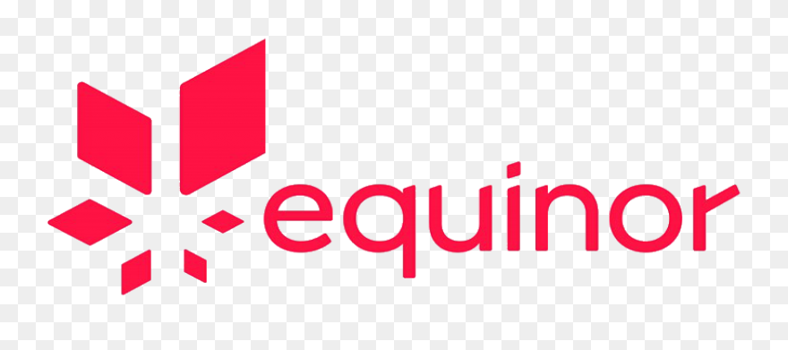

📍 Oslo, Norway — 📞 +47 454 67 412 — ✉️ joakim.torsvik@icloud.com
🌐 Norwegian (native) — 🇬🇧 English (fluent) — 🇪🇸 Spanish (B1-level)
Consultant Role
Consultant Role
 Full-stack Data Scientist | Equinor | Aug 2022 - Nov 2023Grade Average: B (65%)
Grade Average: C